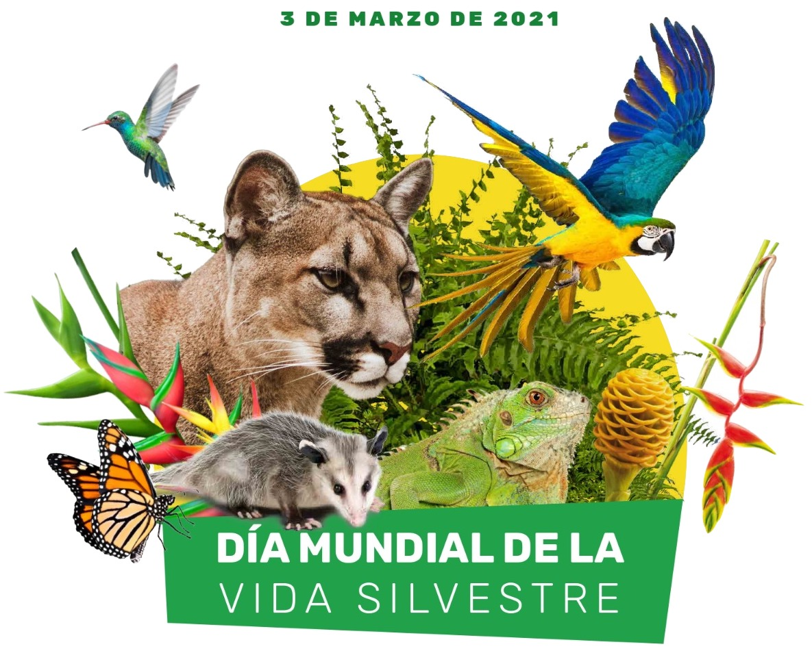

INICIO
El programa “Centro de Recepción y Recuperación de Animales Silvestre ”(CREAS) de CORPOAMAZONIA busca proteger la fauna silvestre rescatada. usuario: wilmer password:123abc o usuario: emmy password:124abc
INICIAR SESIÓN
DONANTES
Estas son las personas que como tu, nos apoyan con el cuidado de nuestros especímenes
Total de personas Donantes:
REGISTRO DE DONACIONES
Click en el registro para ver el Detalle:Total Aportes: USD$
DONAR
ESPECÍMENES ANIMALES